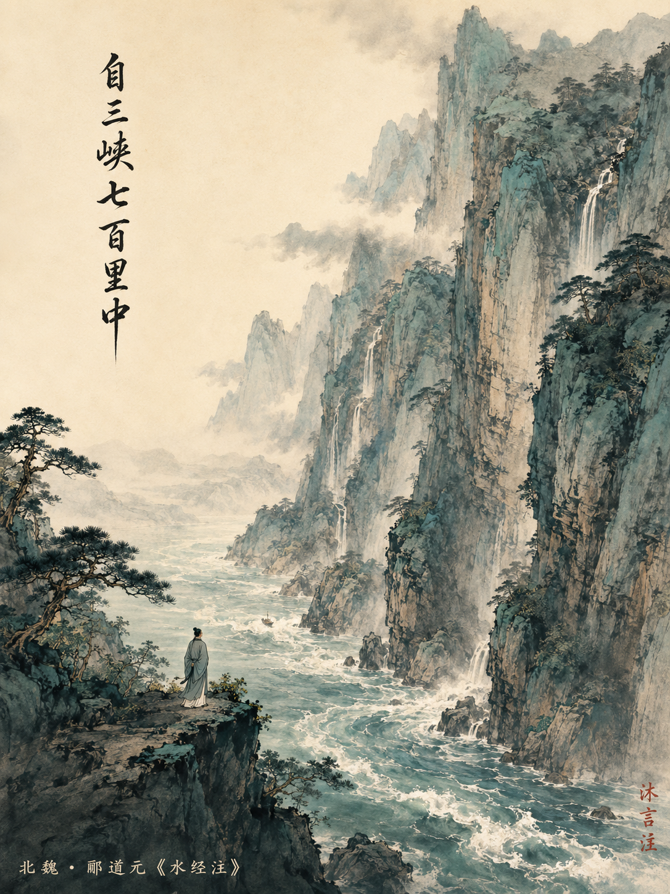

三 峡
zì自sān三xiá峡qī七bǎi百lǐ里zhōng中，
liǎng两àn岸lián连shān山，
lüè略wú无quē阙chù处。
chóng重yán岩dié叠zhàng嶂，
yǐn隐tiān天bì蔽rì日，
zì自fēi非tíng亭wǔ午yè夜fēn分，
bù不jiàn见xī曦yuè月。
zhì至yú于xià夏shuǐ水xiāng襄líng陵，
yán沿sù溯zǔ阻jué绝。
huò或wáng王mìng命jí急xuān宣，
yǒu有shí时zhāo朝fā发bái白dì帝，
mù暮dào到jiāng江líng陵，
qí其jiān间qiān千èr二bǎi百lǐ里，
suī虽chéng乘bēn奔yù御fēng风，
bù不yǐ以jí疾yě也。
chūn春dōng冬zhī之shí时，
zé则sù素tuān湍lǜ绿tán潭，
huí回qīng清dào倒yǐng影，
jué绝yǎn巘duō多shēng生guài怪bǎi柏，
xuán悬quán泉pù瀑bù布，
fēi飞shù漱qí其jiān间，
qīng清róng荣jùn峻mào茂，
liáng良duō多qù趣wèi味。
měi每zhì至qíng晴chū初shuāng霜dàn旦，
lín林hán寒jiàn涧sù肃，
cháng常yǒu有gāo高yuán猿cháng长xiào啸，
zhǔ属yǐn引qī凄yì异，
kōng空gǔ谷chuán传xiǎng响，
āi哀zhuǎn转jiǔ久jué绝。
gù故yú渔zhě者gē歌yuē曰：
bā巴dōng东sān三xiá峡wū巫xiá峡cháng长，
yuán猿míng鸣sān三shēng声lèi泪zhān沾cháng裳。
陪女儿读 122 篇古诗文 · 第56篇 · 郦道元（1/1·独此一篇）

📜 司马迁→
🎭 庄子→
🖋️ 苏轼→
🌟 达哥→
📝 命题人→
🔍 史官→
🎨 顾恺之
郦道元生平 × 北魏时代
左边看"谁" · 右边看"天" — 一个人写了一辈子地理，却从未到过他写得最动人的地方
📜 郦道元的一生
司马迁视角 · 看个人
司马迁视角 · 看个人
约470
生于范阳涿县（今河北涿州）· 父郦范平东将军
少年
随父在山东青州生活 · 游历山川 · 对地理产生兴趣
约489
父亲去世 · 袭爵永宁伯
493
北魏迁都洛阳 · 郦道元任尚书郎
518-525
⭐ 今日 约48-55岁·被免职居洛阳·撰《水经注》40卷30万字
527
被政敌借刀杀人 · 阴盘驿亭被围 · 与弟及二子遇害 · 终年约57岁
🎭 南北朝的年表
庄子视角 · 看天命
庄子视角 · 看天命
386
北魏建立 · 鲜卑拓跋氏统一北方
420
东晋灭亡 · 刘宋代晋 · 南北朝对峙开始
471-499
孝文帝在位 · 力主汉化改革 · 迁都洛阳
约470-527
郦道元一生 · 北魏中后期 ⚔️ 南北隔绝
502-557
南朝梁 · 文学极盛 · 《文心雕龙》《文选》
534
北魏分裂为东魏、西魏
北魏疆域图 · 郦道元的世界
约公元500年 · 郦道元的一生从未跨过南北边界 · 三峡在他去不了的南朝

📜 司马迁 · 观其个人
郦道元在122篇古诗文中只出现1次——就是这篇《三峡》。就这一次，够了一千年。
他是北魏人，生在今天的河北涿州，一辈子在北方做官。南北朝严重对立，北魏的疆域从未到过长江以南——他一生从未亲眼见过三峡。他考察了几百条北方的河流，却写不了黄河。他只能靠书——他引用了437种古籍和碑刻，在洛阳的案头，拼出了这段不到200字的文字。
然后这段文字成了中国写山水写得最好的一篇。李白路过三峡写了一首《早发白帝城》，"朝辞白帝彩云间，千里江陵一日还"——这两句直接从郦道元这里来的。一个没去过三峡的人写的文字，被去过三峡的李白照着抄。
但命运没有放过他。527年，他被政敌陷害，在阴盘驿亭被围困，与弟弟和两个儿子一同被害。他写的书活了1500年。嬴了。
🎭 庄子 · 观其时势
郦道元生活的年代，中国被一条南北边界切成两半。他在北，三峡在南。一个研究地理的人，被政治画的一条线挡住了他最想写的地方。
南北朝是什么样的时代？北方是鲜卑人建立的北魏，南方是汉族政权宋齐梁陈。两边打仗、对峙、互不往来。但郦道元做了一件别人没做的事——他用文字翻过了那道墙。他把所有能找到的关于南方的书全读了，然后在洛阳的书斋里，写出了一段比真正去过的人写得更好的文字。
北魏的孝文帝推行汉化改革，让北方重新重视文化和学问。郦道元就是孝文帝时代的士大夫——他既是官员，也是学者。他的悲剧在于：政治杀了他的人，但他的文字飞出去了。
知识可以穿越政治，文字可以穿越地理。
不到200个字，写了春夏秋冬四个季节的三峡——这就是《三峡》最厉害的地方。不是"写得华丽"，是"写得足够少而足够大"。
夏天——"朝发白帝，暮到江陵，其间千二百里，虽乘奔御风，不以疾也"。他写水急，不说"水流很急"，说"骑着马追不上、乘着风也追不上"。
春冬——"素湍绿潭，回清倒影"。白浪和绿潭，一急一缓，一明一暗，八个字写完了一个季节。
秋天——收尾用了一个渔歌："巴东三峡巫峡长，猿鸣三声泪沾裳。"他在文章里引用了民歌。这不是"技巧"，这是——他知道自己没去过，所以把当地人的话放进去，让真实的人替他见证。
后来李白路过三峡，写了一首《早发白帝城》："朝辞白帝彩云间，千里江陵一日还"——这两句直接从郦道元的"朝发白帝，暮到江陵"里来的。没去过三峡的人写的文字，被去过三峡的李白照着用。
夏天——"朝发白帝，暮到江陵，其间千二百里，虽乘奔御风，不以疾也"。他写水急，不说"水流很急"，说"骑着马追不上、乘着风也追不上"。
春冬——"素湍绿潭，回清倒影"。白浪和绿潭，一急一缓，一明一暗，八个字写完了一个季节。
秋天——收尾用了一个渔歌："巴东三峡巫峡长，猿鸣三声泪沾裳。"他在文章里引用了民歌。这不是"技巧"，这是——他知道自己没去过，所以把当地人的话放进去，让真实的人替他见证。
后来李白路过三峡，写了一首《早发白帝城》："朝辞白帝彩云间，千里江陵一日还"——这两句直接从郦道元的"朝发白帝，暮到江陵"里来的。没去过三峡的人写的文字，被去过三峡的李白照着用。
讲给可心听：
可心，你知道这篇文章是谁写的吗？一个叫郦道元的叔叔。他生活在1500年前，是个地理学家。他在洛阳（就是河南那个地方）工作，写了一本特别厚的书叫《水经注》，里面写了1252条河。
但是——长江三峡，他这辈子从来没去过。那时候他的国家在北方，长江在南方，中间隔着一道边境线，他过不去。那他怎么写出这么漂亮的三峡的呢？他把能找到的关于三峡的书全看了——437种——然后用想象力重新写了一遍。
这就像老师让你写一篇"我最想去的地方"，你从来没去过，但你查了所有关于那个地方的书、看了所有照片，然后写的文章比真正去过的人写得还好。后来另一个大诗人李白路过三峡，写诗的时候直接抄了他的两句话——一个没去过的人写的，被去过的人抄。牛不牛？
跟可心聊：
1. 你有没有"没亲眼见过但是特别想去看一看"的地方？
2. 看书和亲自去，哪个更重要？还是都需要？
3. 郦道元57岁被坏人害死了，但他写的书活了1500年。你觉得——一个人写的文字，是不是比他活得久多了？
可心，你知道这篇文章是谁写的吗？一个叫郦道元的叔叔。他生活在1500年前，是个地理学家。他在洛阳（就是河南那个地方）工作，写了一本特别厚的书叫《水经注》，里面写了1252条河。
但是——长江三峡，他这辈子从来没去过。那时候他的国家在北方，长江在南方，中间隔着一道边境线，他过不去。那他怎么写出这么漂亮的三峡的呢？他把能找到的关于三峡的书全看了——437种——然后用想象力重新写了一遍。
这就像老师让你写一篇"我最想去的地方"，你从来没去过，但你查了所有关于那个地方的书、看了所有照片，然后写的文章比真正去过的人写得还好。后来另一个大诗人李白路过三峡，写诗的时候直接抄了他的两句话——一个没去过的人写的，被去过的人抄。牛不牛？
跟可心聊：
1. 你有没有"没亲眼见过但是特别想去看一看"的地方？
2. 看书和亲自去，哪个更重要？还是都需要？
3. 郦道元57岁被坏人害死了，但他写的书活了1500年。你觉得——一个人写的文字，是不是比他活得久多了？
📋 中考必考实词
阙（quē）：通"缺"，中断。考点：通假字。
襄（xiāng）：冲上、漫上。"夏水襄陵"——夏天水涨漫上山陵。
沿溯（yán sù）：顺流而下（沿）和逆流而上（溯）。"沿溯阻绝"——无论上下都走不通。
属引（zhǔ yǐn）：连接不断。"属"读zhǔ——连接。常考题：注音释义。
绝：文中两见——"沿溯阻绝"（断绝） vs "哀转久绝"（消失）。一词多义，典型考点。
📝 核心名句默写
① "自三峡七百里中，两岸连山，略无阙处"——开篇总写，高频填空。
② "虽乘奔御风，不以疾也"——侧面描写水速，注意"奔"在这里是名词（飞奔的马），词类活用考点。
③ "巴东三峡巫峡长，猿鸣三声泪沾裳"——引用渔歌收尾，手法考点：侧面烘托秋季萧瑟。
🎯 文章手法考点
· 四季结构：夏（水势）→春冬（清幽）→秋（萧瑟），按水势变化组织，是典型的"分类描写"手法。
· 正面+侧面描写："重岩叠嶂隐天蔽日"是正面写山高，"自非亭午夜分不见曦月"是侧面烘托。
· 引用手法：结尾引用渔歌——借当地人之口增加真实感，也是作者"未去过三峡"的巧妙处理。
· 简练传神：全文不到200字，写了四季三景物——中考常要求赏析"简练的语言风格"。
⚠️ 易错字：嶂（山字旁，不是"障"）、湍（三点水，不是"喘"）、漱（三点水+欶）、裳（cháng不要读shang）
阙（quē）：通"缺"，中断。考点：通假字。
襄（xiāng）：冲上、漫上。"夏水襄陵"——夏天水涨漫上山陵。
沿溯（yán sù）：顺流而下（沿）和逆流而上（溯）。"沿溯阻绝"——无论上下都走不通。
属引（zhǔ yǐn）：连接不断。"属"读zhǔ——连接。常考题：注音释义。
绝：文中两见——"沿溯阻绝"（断绝） vs "哀转久绝"（消失）。一词多义，典型考点。
📝 核心名句默写
① "自三峡七百里中，两岸连山，略无阙处"——开篇总写，高频填空。
② "虽乘奔御风，不以疾也"——侧面描写水速，注意"奔"在这里是名词（飞奔的马），词类活用考点。
③ "巴东三峡巫峡长，猿鸣三声泪沾裳"——引用渔歌收尾，手法考点：侧面烘托秋季萧瑟。
🎯 文章手法考点
· 四季结构：夏（水势）→春冬（清幽）→秋（萧瑟），按水势变化组织，是典型的"分类描写"手法。
· 正面+侧面描写："重岩叠嶂隐天蔽日"是正面写山高，"自非亭午夜分不见曦月"是侧面烘托。
· 引用手法：结尾引用渔歌——借当地人之口增加真实感，也是作者"未去过三峡"的巧妙处理。
· 简练传神：全文不到200字，写了四季三景物——中考常要求赏析"简练的语言风格"。
⚠️ 易错字：嶂（山字旁，不是"障"）、湍（三点水，不是"喘"）、漱（三点水+欶）、裳（cháng不要读shang）
▼ 史官审核 ▼
事实核查：郦道元约470-527年，北魏地理学家；《水经注》40卷30余万字，引用437种古籍；一生未到长江以南（南北朝对峙），未亲见三峡；527年被政敌陷害死于阴盘驿亭；122首中仅此1篇。✅ 全部有史料可查。
拼音审核：重点字——"阙(quē)"、 "嶂(zhàng)"、 "曦(xī)"、 "溯(sù)"、 "巘(yǎn)"、 "漱(shù)"、 "属(zhǔ)"。全部正确。渔民歌谣部分"沾裳(cháng)"正确，古音"裳"读cháng。✅
价值观审核：叙事角度（没去过但靠知识到达）积极向上，对儿童传递"知识可以突破界限"的正向价值观。被害的悲剧部分用语克制，没有渲染恐怖。✅
拼音标注提示："阙"不读què；"巘"不读yàn；"属引"的"属"读zhǔ（连接）；"裳"古音cháng。
史官结论：全部通过。准予放行，交由顾恺之。
拼音审核：重点字——"阙(quē)"、 "嶂(zhàng)"、 "曦(xī)"、 "溯(sù)"、 "巘(yǎn)"、 "漱(shù)"、 "属(zhǔ)"。全部正确。渔民歌谣部分"沾裳(cháng)"正确，古音"裳"读cháng。✅
价值观审核：叙事角度（没去过但靠知识到达）积极向上，对儿童传递"知识可以突破界限"的正向价值观。被害的悲剧部分用语克制，没有渲染恐怖。✅
拼音标注提示："阙"不读què；"巘"不读yàn；"属引"的"属"读zhǔ（连接）；"裳"古音cháng。
史官结论：全部通过。准予放行，交由顾恺之。
▼ 审核通过 · 交付丹青 ▼
基于司马迁和庄子的合论、苏轼的文学品鉴、史官的审核意见——尤其是"没去过却写出了千古名篇"这个核心反差——下面交付插画提示词。画要表达的不是三峡有多壮观，而是"一个人在书斋里，用想象力翻过了国界，写出了他从未见过的风景"。
🎨 顾恺之 × 可心
学完了这一篇，现在你是画师。这篇课文在你心里是什么样子的？
点一下你选的答案就好
点一下你选的答案就好
第 1 问
「三峡是什么颜色的？」
"两岸连山，隐天蔽日"——深绿？"素湍绿潭"——白和绿？"晴初霜旦"——灰蓝？你心里三峡该是什么颜色？
第 2 问
「郦道元没去过三峡——你觉得他在画里吗？」
他该在画里吗？在哪儿？
第 3 问
「四个季节，只能画一个——你选哪个？」
夏水急流？春冬清澈？还是秋霜长啸？
第 4 问
「这幅画里有什么声音？」
闭上眼睛想象——三峡是什么声音？
第 5 问
「读完他的一生，画里应该多一点什么？」
他被人害死了，但1500年后你还在读他的文章。
沐
言
注
言
注
沐言注 · 这幅画里有可心读完这篇文章之后心里的样子
🖼️ 插画提示词 — 自动合成可心的选择 · 复制发给 ChatGPT
选完了吗？点击下面的按钮，自动把可心的选择合成提示词，再复制发给 ChatGPT。
← 可心每问点一个答案，然后点这里
🧩 五格模板
①
扳机：一个人一生没去过的地方，被他写成了1500年来最好的山水文字。
②
背景：郦道元（约470-527），北魏地理学家。约48-55岁被免职居洛阳时著《水经注》40卷30万字。一生在北方，从未跨过长江。靠437种古籍，写出1252条河。
③
命运的反差：没去过三峡的人，写的《三峡》让李白照着抄了两句（"朝发白帝，暮到江陵"）。527年被政敌陷害，与弟及二子遇害。但文章活了1500年。人没了，文字赢了。
④
给可心的问题：你有"没亲眼见过但特别想去"的地方吗？看书和亲自去，哪个更重要？一个人的文字，是不是比他自己活得久多了？
⑤
钩子："有些地方你到不了，但书能把你送到。"